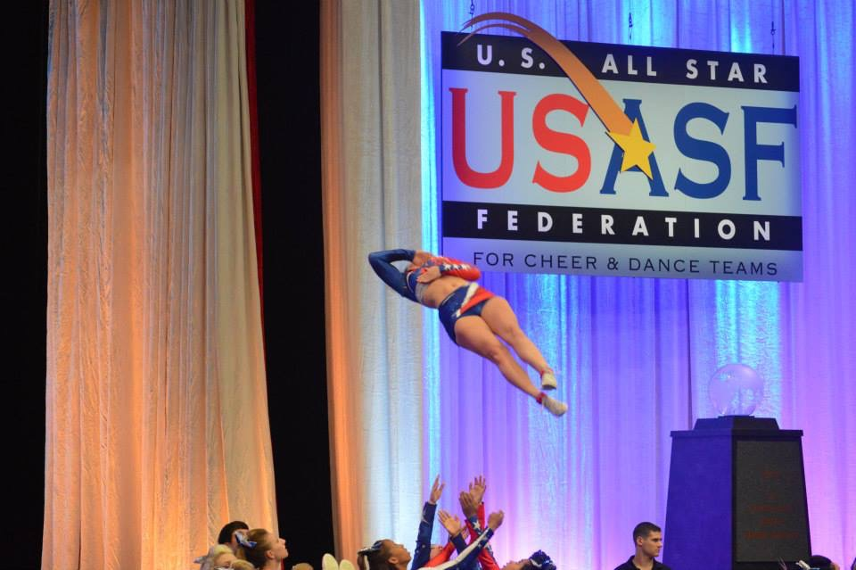

What is Competitive Cheerleading?
Competitive Cheerleading is very different from sideline cheer. For one, the athletes do not shout or speak any cheers. Competitve Cheerleading, as the name implies, involves competitions, with two minute and thirty second length routines, which are practiced, over and over again.
Where do Competitve Cheerleaders practice?
Each competitive cheerleading team is a part of a cheer gym. These cheer gyms have a variety of different leveled teams. For example, there is level 1, 2, 3, 4, 4.2, and 5. In some instances, there may be a level 6 team, however those teams are mainly colleged aged individuals or older. Each level determines what stunting skills and tumbling skills are required and allowed, and also determines the expected executions of other elements such as jumps, dance and overall routine flow.

The Blue Mat
The Blue Mat is a primary symbol of competitve cheerleading. The blue mat is a spring floor with 7 panels. Cheer gyms have atleast one of these set up in their gym due to the fact that these are what cheerleaders compete on at competitions. Being centered is one of the most important parts of the visual aspect of a routine and teams may spend whole practices just practicing formations to make sure that everything and everyone is centered and in the right place.